Street photography has long been loved by photography enthusiasts. Its barrier is low, and it is very friendly to beginners. You do not need to bury yourself in photography theory, and you do not have to spend a fortune on top gear. You just step outside your door and photograph what is in front of you. That is street photography.
But a question comes with it. Whether you are a new enthusiast or an experienced shooter, how do you truly raise your street photography, and take work with more depth that holds up over time?
In this article, we have gathered 5 classic dimensions to take you into the core of street photography.
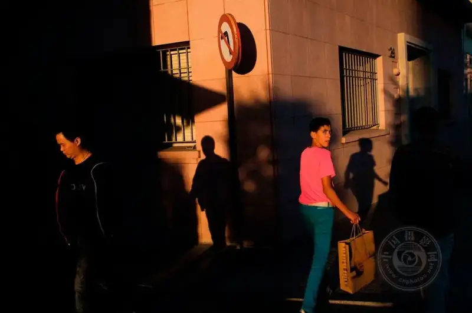
©Marcelo Caballero
1 | Analyze the scene
Stepping out of your comfort zone and throwing yourself onto the street is only the start. The real first step is to learn to "read" the street. Watch the environment, listen to the city, notice the people passing by, and wait for the moment worth freezing forever.
This kind of analysis is really a meditation with a camera. You have to be sharp as an eagle and imagine in advance the scenes that might happen. It is fine if you miss one. The street never lacks good moments. As long as your eyes are open, a good show can start at any time.
The scenes that look ordinary often hold the feeling you know best. Whether you catch it by chance or judge it in advance, when you truly "hit" that moment, the thrill is beyond compare.
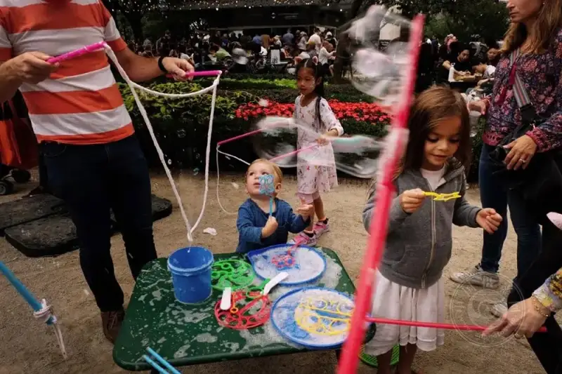
©Brad Jones
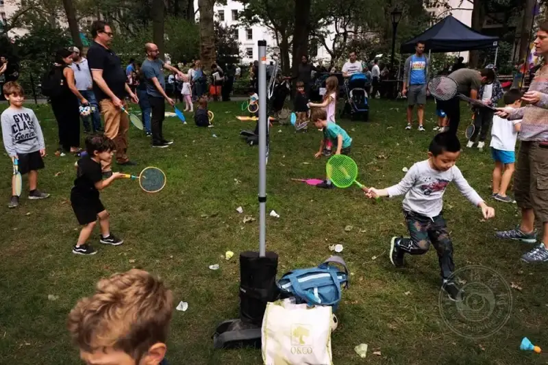
©Brad Jones
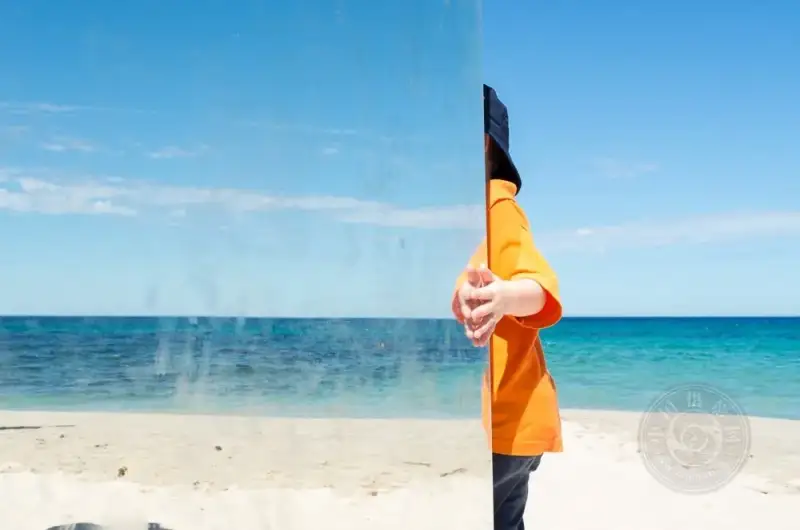
©Rebecca Wiltshire
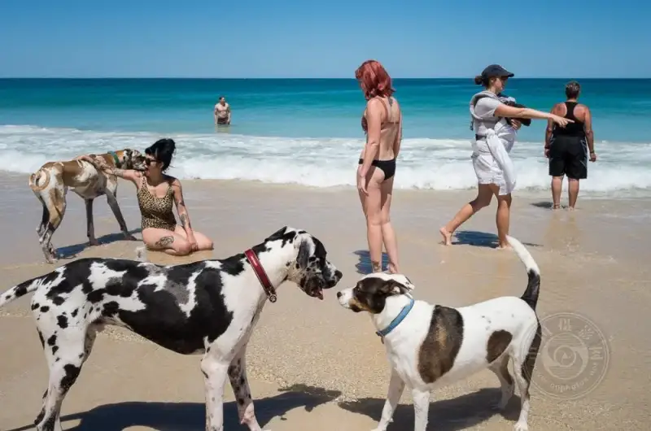
©Rebecca Wiltshire
2 | Calculate the light
With a good scene, you still need good light. Light is the key that raises a photo from a "record" to a "work."
Picture it. A hazy mist of light seeps into the alley like ink, or deep shadows lay layers of drama across a wall. These are gifts of light. As a street photographer, you must learn to judge which side of the alley to stand on, based on the time and the position of the sun.
When you shoot into the light, the subject can be swallowed by a silhouette if you are not careful. But do not fear failure. Every mistake helps you understand light better. In the end, light is everything. Even with perfect composition and a perfect moment, a frame falls short without the right light. On the other hand, even light and shadow alone are enough to make a great photo.
So be sure to "calculate" your light.
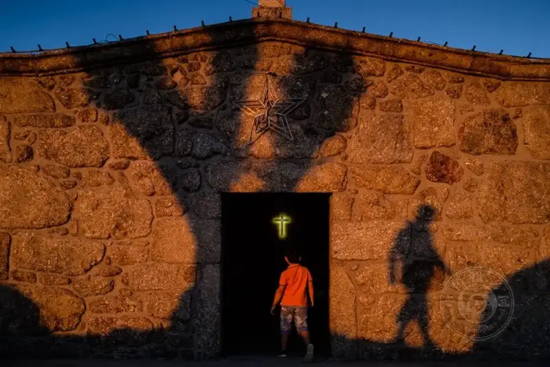
©Giedo van der Zwan
©Giedo van der Zwan
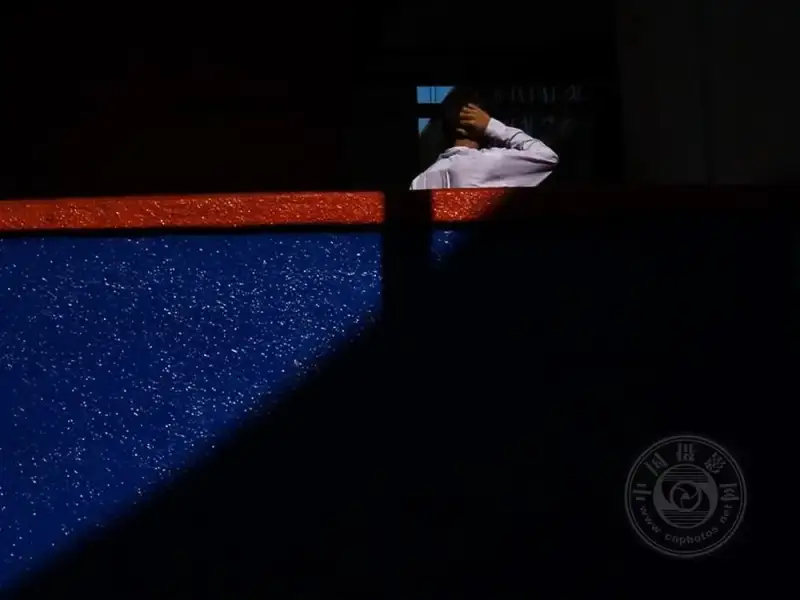
©Shamsull Bakhtiar
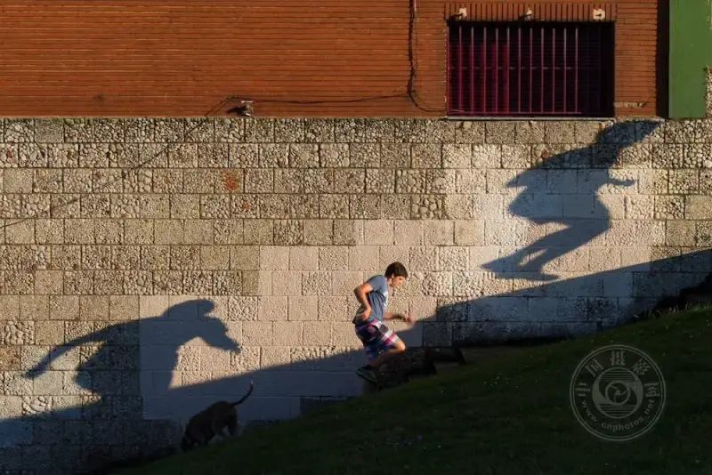
©Catherine Le Scolan-Quéré
3 | Follow your intuition
If you ask which ability is the hardest to train, intuition is surely near the top. It drifts and slips, yet it matters greatly.
How do you build it? Frankly, there is no fixed formula. There are only two keys: anticipation plus patience. You may sense that a story will happen around the corner, or you may simply wait quietly in the frame for the "right moment" to arrive.
The longer you wait, the more likely your intuition pays off. And sometimes fate gives you an unexpected bonus, even better than you expected.
In the end, intuition is more like a natural gift for luck. But "being in the right place at the right time" is often more reliable than luck itself. So do not overthink. Stand there first, and let your intuition lead.
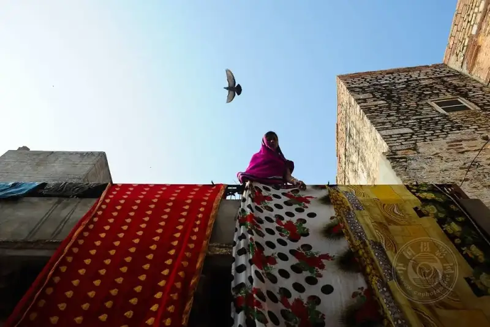
©Shamsull Bakhtiar
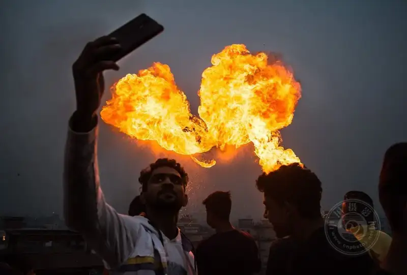
©Md. Sydul Islam Sayed
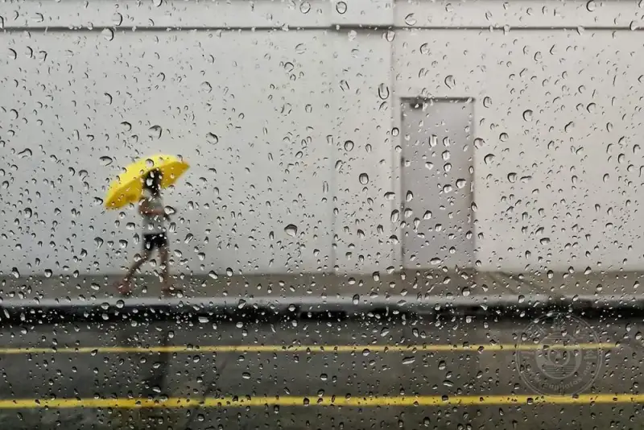
©Paul Raymond S. Paule
©Brian Villalongja
4 | Find shapes
Shapes are the "visual anchors" in a photo. They make the frame easier to understand and easier to remember.
So go out and actively "hunt" for shapes. Combine geometric elements, the subject, and light in a clever way. But do not make it too complex. A viewer who is relaxed does not want to work hard to solve a puzzle. If the frame is too full or too messy, people lose patience for looking.
Keep it simple and keep it eye-catching, then wait for the right moment to press the shutter. By the way, learning a little geometric composition and noticing interesting shadows will lift your work to the next level.
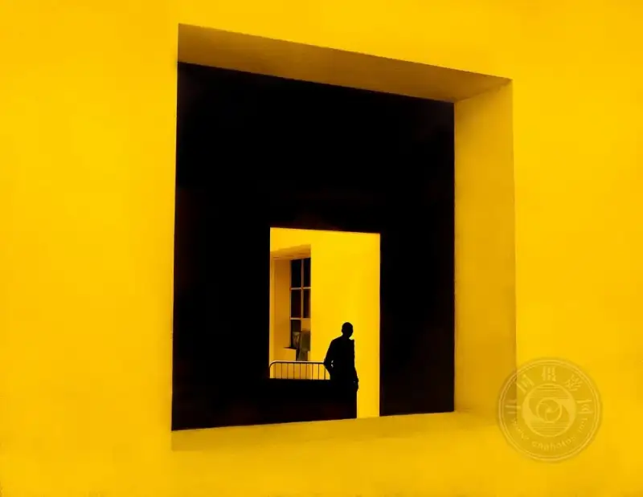
©Karolina Trapp
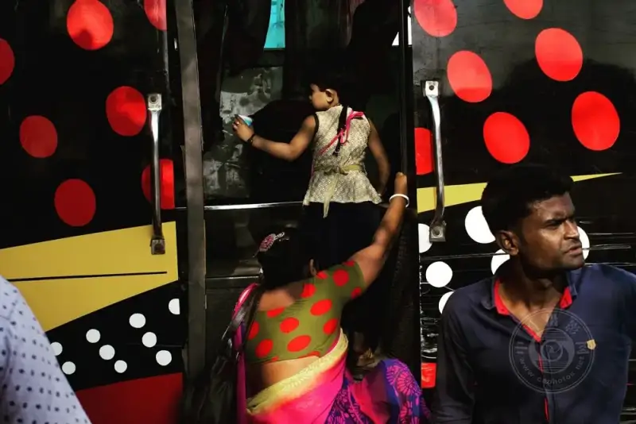
©Ab Rashid
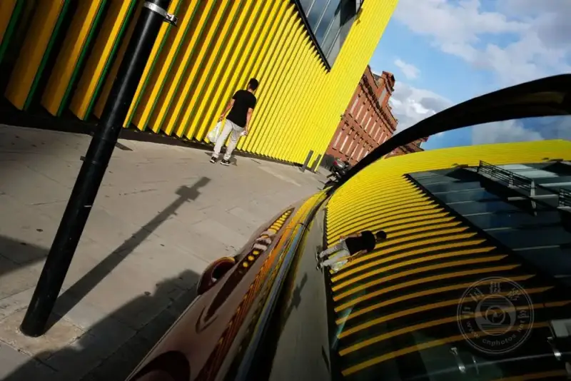
©Francesca Chiacchio
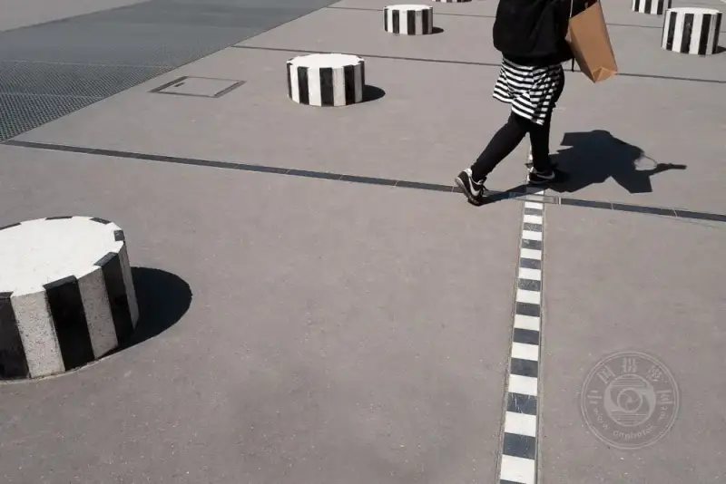
©Karolina Trapp
5 | Speed comes first
When everything is ready, time becomes your last weapon.
Your reaction speed, your rhythm of operation, and your agility in catching the moment. Without these, all the work above may come to nothing. The scene passes in an instant, the light fades fast, and the main figure quietly walks away.
For a street photographer, reacting in time is an instinct. But "not missing the moment" does not mean dwelling on every one you miss. Focusing, composing, setting the parameters, and the instant you press the shutter. All of this should be trained until it is as natural as breathing.
The more you practice, the more these moves merge into your blood. Do not care too much about how many frames per second the camera can fire. That is only part of the tool. What really matters is that you know when to use it and why. This judgment belongs to you alone.
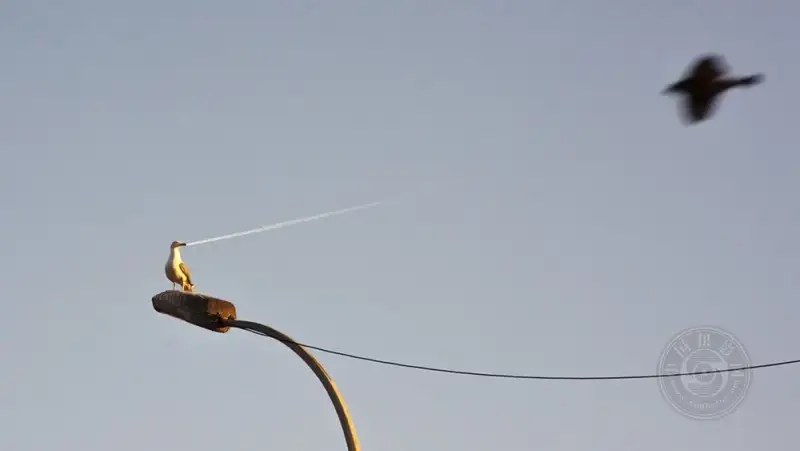
©Serkan Tekin
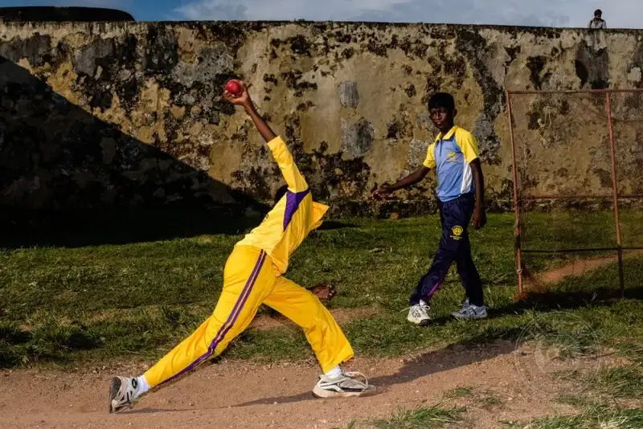
©Giedo van der Zwan
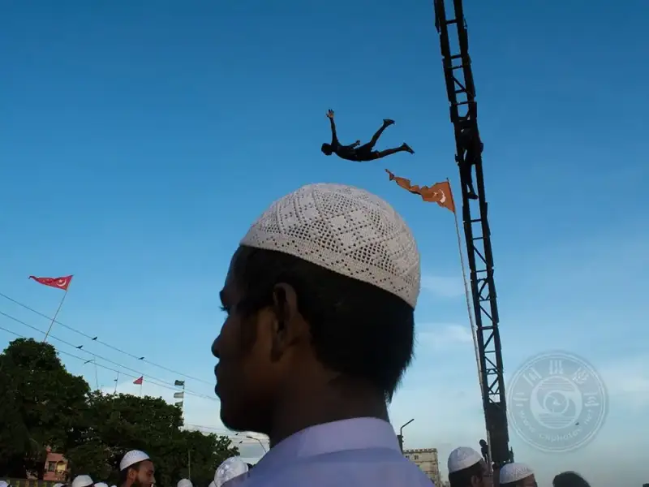
©Md. Sydul Islam Sayed
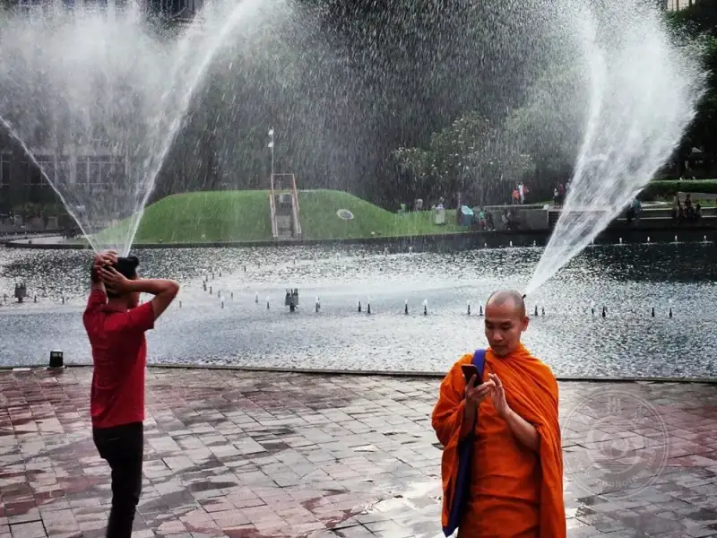
©Shamsull Bakhtiar
A closing thought
Street photography has no end. Every trip outside and every press of the shutter is a dialogue with the world.
Go out more, and shoot more. The street around you will teach you more than any article can.